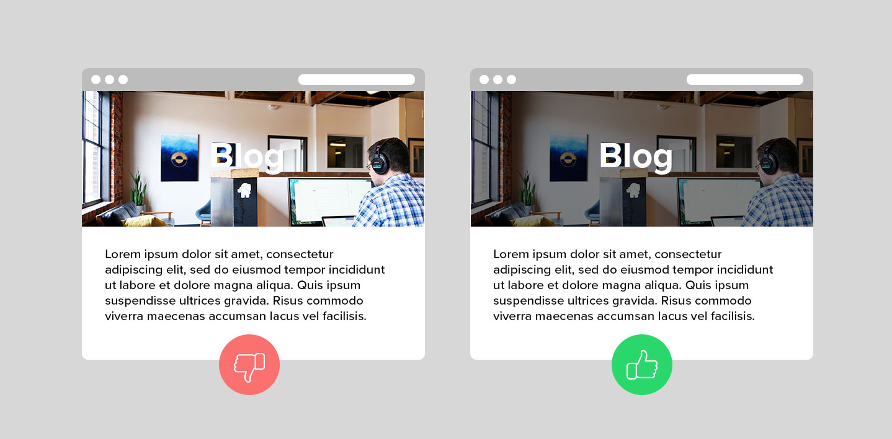

What is web Accessibility?

Accessibility is the art of ensuring that, to as large an extent as possible, facilities (such as, for example, web access) are availabe to people whether or not they have impairents of one sort or another. Web accessibility focuses on designing and developing websites that are more accessible to people with disabilities.
Web accessibility for everyone
UX Designers
Developers
Accessibility guidelines for UX Designers
As a UI/UX designer there are few points that should keep in mind while creating components or design webpages.
Use of colour: WCAG 2.0 level AA requires a contrast ratio of at least 4.5:1 for normal text and 3:1 for large text. WCAG 2.1 requires a contrast ratio of at least 3:1 for graphics
and user interface components (such as form input borders). WCAG Level AAA requires a contrast ratio of at least 7:1 for normal text and 4.5:1 for large text.
Large text is defined as 14 point (typically 18.66px) and bold or larger, or 18 point (typically 24px) or larger.
Consistent navigation: Ensure that repeated components occur in the same order on each page of a site.
It is helpful for users with cognitive limitations, low vision and intellectual disabilities as it becomes easier to predict where they can find things on each page.
Consistent Components: UI Components having same functionality should be consistent. Maintaining a design system, pattern library or style guide is encouraged to keep consistency in team. Helps to improve re-usability and efficiency.
Use of headings: Use descriptive and informative page title. Page headings and labels for form and interactive controls should be informative. This can help users with limited short-term memory, low vision or difficulty reading text — they can see only few words at a time and know the purpose of each section.
Keyboard-only users: Make sure users can interact with your page using the keyboard alone. Clearly define and design the focus state of input elements. Change of content, like text, should not take place on focus.
Opening links in new windows with advanced notice: If you must do it, warn the user before they click on the link that it’ll open in a new window. You can use text like “opens in a new window” or a visual icon. If you choose to use an icon, make sure it’s accessible to screen reader users.
Animation: No content on page should flash for more than 3 times per second unless that flashing content is sufficiently small and the flashes are of low contrast and do not contain too much red.
Layout: Create content that can be presented in different ways (for example simpler layout) without losing information or structure.
Tools that make accessible design easier
Stark: Baking accessibility into your design process. The plugin to help you design and build products that are accessible, ethical and inclusive
The A11y Machine: automated accessibility testing and diagnosis. This automated accessibility tools crawls and tests web pages—and comes back with an automatically-generated detailed report. It checks the pages against the three most common guidelines: W3C Web Content Accessibility Guidelines (WCAG) 2.0; U.S. Section 508 legislation
Accessibility Checklist: Checking off accessibility needs during design, dev, and test processes
Axe Chrome plugin: The Axe plugin is an in-browser accessibility tool for Chrome Developer Tools. “Drop the axe,” as they say, on accessibility issues fast with the detailed report the plugin provides, including solutions.
Accessibility for frontend developers
A frontend developers’ job is to present visual information that looks good and gives users cues to help them understand content quickly. Even a static, text-only web page is more than a collection of words.
Color and color contrast: Colors need to have enough contrast to accommodate color blindness or low visibility conditions. WebAIM has an excellent contrast testing tool, where we can input the foreground (i.e. text) and background colors to see if they have sufficient color contrast.
Image descriptors: To enhance user experience for people using screen readers or with slow internet, all non-text content, such as images, charts and graphs need a text equivalent, such as image captions or detailed alt attributes in the image tag. Within an alt tag, try to describe the picture as you would to someone who can’t see it.
Word in images: Include separate HTML text in images instead of images with text within the image file. Other than Alt descriptions, screen readers can’t read the text in images. Also, when images with text are zoomed, they can lose readability and become pixelated.
Heading structure: Just as titles with big font sizes help a reader understand the order of the content better, screen readers use heading tags to read content. The screen reader provides an overview of the page by reading each heading in a hierarchical flow.
Aria: Aria stands for Accessible Rich Internet Applications. It was created to improve the accessibility of applications by providing additional information to screen readers. Aria role expands HTML semantic vocabulary and defines what an element is or does. A lot of HTML elements already have default roles, so it is intended for roles not available in HTML, for custom elements, or to override default roles. An example of an ARIA role is form role=“search”
Limit animations: Animation can make users feel sick if they suffer from vestibular disorders, vertigo, visual processing issues, are hungover, or are motion sensitive for any other reason.
Tab through your site: People with motor disabilities, low-vision or without precise muscle control don’t use mouses, and are dependent on a keyboard to navigate content. So, make sure you can navigate through your site using only the Tab key, and include a focus state on components that are currently selected.
Accessibility for backend developers
For backend there are no WCAG guidelines to follow but the most important things when join a new project would be:
Make alt text required attribute for image and don't pass any default value to it.
Follow best practices, often backend devs generate HTML pages, those pages may be structured in a way that's not super accessible
Focus on performance: a slow site is an inaccessible site
Talk with frontend devs and designers to have a better picture of a11y in the context of the company and how you could help them ;-) maybe it's just a question of helping building tools or better templates
Embed tools in the app, there are tools that can check apps for static a11y issues
Web Accessibility Evaluation Tools List
Web accessibility evaluation tools are software programs or online services that help you determine if web content meets accessibility guidelines. This page provides a list of evaluation tools that you can filter to find ones that match your particular needs. To determine what kind of tool you need and how they are able to assist you.